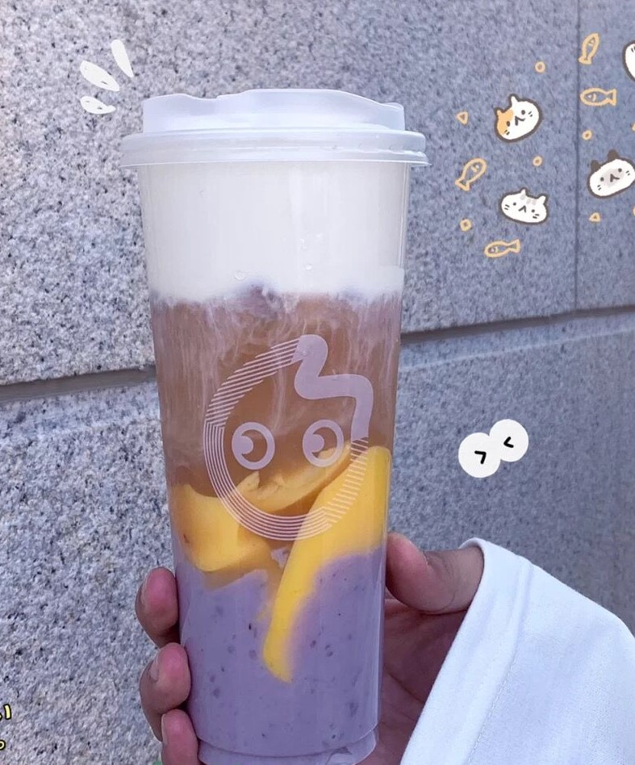
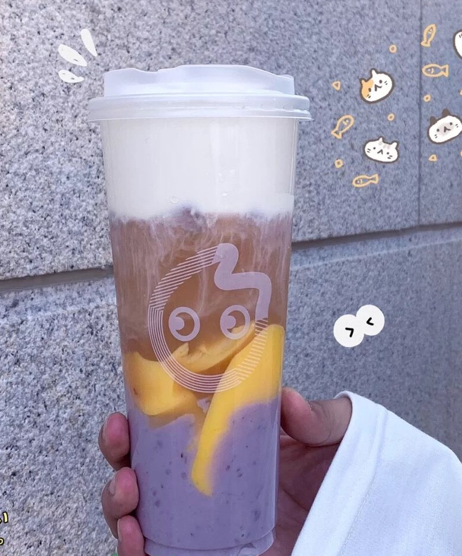
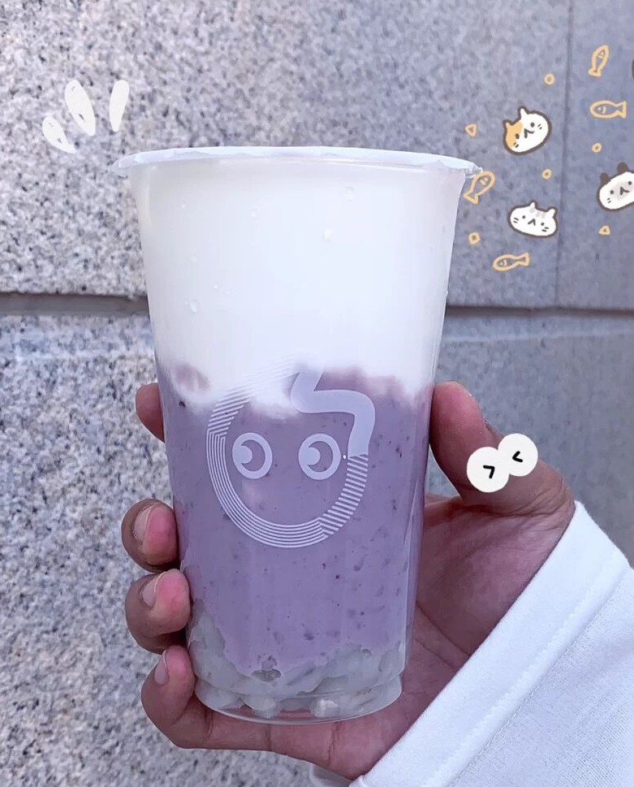

法式奶霜红茶
点单攻略：
法式奶霜红茶大杯+布丁+芋泥+温热少糖
软糯软糯的芋泥再加上布丁的口感，再配上温温热热的奶茶，觉得冬天瞬间就美好了呢(。・∀・)
CoCO家的芋泥系列可以说是奶茶届中非常有特色的了，芋泥绵绵软软的口感配上温热的奶茶，简直不要太适合冬天了吧！
而且芋泥中含有人体所需的多种营养成分，适量使用有利于提高人体的抵抗力哟~
最最最重要的一点是，适当吃一些芋泥，还有促进减肥的作用呢，喝点奶茶也不会有心理负担呢
价格：15RMB左右（这么平价大碗的奶茶真的不考虑尝试一下吗？）

点单攻略：
法式奶霜红茶大杯+布丁+芋泥+温热少糖
软糯软糯的芋泥再加上布丁的口感，再配上温温热热的奶茶，觉得冬天瞬间就美好了呢(。・∀・)

点单攻略：
coco纯牛奶中杯+青稞+芋泥+温热少糖
这个连续喝上一个星期都不会腻，而且比普通的奶茶要健康很多哟(☆▽☆)